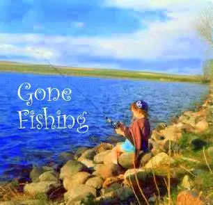

{kind=link}
Sometimes we need that, don’t we? We just need to get away from it all — the older sister who always seems ready to pick a fight, the messy room, the hum-drum of home. We just need to pack up a lunch, the tackle box and an ice-filled cooler and head out. Summer’s as good a time as any to go looking for solitude.
I’m finding I need it too at this juncture in the summer. I need to remove myself for just a little while from the active, busy world of blogging, camp out somewhere cool, and do what needs being done. In particular, I have two projects that are calling to me, urgently. The summer has started off well, and now I feel ready to tackle those projects. But I can’t do it if I am also thinking up the next blog post. So I’m going to pull back just long enough to get at those projects and feel like I’ve made progress on them.
As writers, we need to conserve our writing time. It’s hard-won at times. Writing well requires a lot of mental energy. I’m setting out to do that. When I return, I expect to come back revived and readier than ever to engage with the blogging community I’ve come to adore.
I think this break will be good for all of us. I’ll keep my comments open, and I might even come back now and again to post a photo or two. I’ll definitely post things like upcoming newspaper columns — need to keep the published material flowing along. But the regularly scheduled programming will change a bit, for a month or so, until I can’t stand it any longer and feel the strong urge to rejoin you all again.
Thanks for understanding. I truly hope you all have a wonderful rest of the summer. I look forward to the end-of-summer reunion!
Hasta luego (until later),
PGM
P.S. I am going to keep posting weekly on Peace Garden Writer, so if you enjoy reading my rants about the writing life, they’ll be available still on a regular basis, and I might even come back here with a little reminder each week if I think of it.